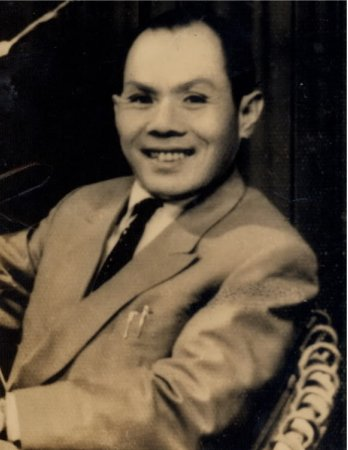

Sinh năm 1910 ở làng Tân Hội(sau đổi thành Tân Phong) huyện Đức Phổ( Quảng Ngãi). Học trường Quảng Ngãi, trường Qui Nhơn. Đã từng cạo đầu đi tu, gánh cát ở bãi sông Cái, bán kẹo ở Hà Nội, bán báo ở Sài Gòn. Hiện nay ở Hà Nội sông bằng nghề văn.

Đã viết: Ami du peuple, Le Cygne, Văn học tạp chí 1935, Hanoi báo, Phụ nữ.
Đã xuất bản: Tập thơ đầu 1934
Nguyễn Vỹ đã đến giữa làng thơ với tiếng chiêng trống xập xoè inh cả tai. Chúng ta đổ nhau ra xem. Nhưng chúng ta lại tưng hửng trở vào vì ngoài cái lối ăn mặc và những điệu bộ lố lăng lúc đầu ta thấy con người ấy không có gì.
Táo bạo thì táo bạo thực, nhưng trong văn thơ táo bạo không đủ đưa người ta ra khỏi cái tầm thường. Khi Nguyễn Vỹ hô hào:
Ta hãy truyền một thi hứng cho thế kỷ hai mươi,
Ta hãy ký thác trong vần thơ những tình sâu ý hiểm
Người có biết rằng trong hai câu này không có lấy một chút "tình sâu ý hiểm" và mặc dù cái lốt mới rềnh ràng của chúng, chúng vẫn có thể nằm xếp hàng với những câu sáo nhất xưa và nay mà không chút... ngượng. Tránh tầm thường mà lại rơi vào tầm thường là thế.
Nguyễn Vỹ quả là muốn loè những kẻ tầm thường là bọn chúng ta. Thực ra chúng ta cũng dễ bị loè. nhưng ở chỗ nào khác kia, chứ trong văn chương thì hơi khó. Một hai người có thể lắm; năm mười người; trăm ngàn người có thể lầm; chứ cả đám người mênh mông không tên tuổi kia thì ít khi nhầm lắm. Chúng ta có thể lầm trong một hai năm chứ lầm luôn trong năm bảy năm hay lâu hơn nữa, là chuyện thảng hoặc mới có.
Tôi tin rằng linh hồn chung của một lớp người đủ phức tạp để cảm thông với hầu hết những vần thơ văn có giá trị. Một bài thơ như bài" Sương rơi" được nhiều người thích. Người ta thấy Nguyễn Vỹ đã sáng tạo ra một nhạc điệu riêng để tả một cái gì đương rơi. Cái gì đó có thể là những giọt sương cũng có thể là những giọt lệ hay những giọt gì rơi đều đều, chậm chậm trong lòng ta mỗi lúc vẩn vơ buồn ta đứng một mình trong lặng lẽ.
Nhưng" Sương rơi" còn có vẻ một bài văn." Gửi Trương Tửu" mới thực là kiệt tác của Nguyễn Vỹ. Trong lúc say, Nguyễn Vỹ đã quên được cái tật cố hữu của người, cái tật loè đời. Người ta đã quên những câu thơ hai chữ và những câu thơ mười hai chữ. Người dùng một lối thơ rất bình dị, rất xưa lối thất ngôn tràng thiên liên vận và liền chân. Lời thơ thống thiết, uất ức, đủ dãi nỗi bi phẫn cho cả một hạng người. Một hạng người nếu có tội với xã hội thì cũng có chút công, một hạng người đã đau khổ nhiều lắm, hạng sống bằng nghề văn. Hãy cho là họ không có gì xuất chúng đi thì ít nhất họ cũng đã nuôi những giấc mộng to lớn khác thường. Nhưng đời không chiều họ; đụng vào sự thực, những giấc mộng của họ đều tan tành và lần lượt họ bỏ thây dọc đường hay một căn phòng bố thí.
Nguyễn Vỹ dã làm bài thơ này trong một lúc vô cùng buồn giận cái nghiệp văn chương. Nhưng ai cùng một cảnh huống xem thơ tưởng có thể khóc lên được. Trong lời văn còn một chút nghênh ngang từ đời xưa lưu lại. Nhưng ta đã xa lắm rồi cái kiêu ngạo phi thường của Lý Bạch, chỉ có văn chương còn khinh hết thảy:
Khuất Bình từ phú huyền nhật nguyệt
Sở vương đài tạ không sơn khâu;
Hứng cam lạc bút giao ngũ nhạc
Thi thành tiếu ngạo lăng thương châu.
Với Nguyễn Vỹ chúng ta đã mất hẳn cái cười kiêu ngạo ấy và ngơ ngác thấy sắp cùng hàng với... chó.
Cái lối sắp hàng kỳ quái ấy đã làm phật ý Tản Đà. Một hôm say rượu, Tản Đà trách Nguyễn Vỹ: "Sao anh lại ví nhà văn chúng mình với chó? Anh không sợ xấu hổ à?" Nguyễn Vỹ đáp lại, cũng trong lúc say: "Tôi có ví như thế thì chó xấu hổ chứ chúng ta xấu hổ nỗi gì?"
Septembre - 1941
SƯƠNG RƠI
Sương rơi
Nặng trĩu
Trên cành
Dương liễu...
Nhưng hơi
Gió bấc
Lạnh lùng
Hiu hắt
Thấm vào
Em ơi,
Trong lòng
Hạt sương
Thành một
Vết thương!..
Rồi hạt
Sương trong
Tan tác
Trong lòng,
Tả tơi
Em ơi!
Từng giọt
Thánh thót,
Từng giọt
Điêu tàn
Trên nấm
Mồ hoang!...
Rơi sương
Cành dương
Liễu ngả
Gió mưa
Tơi tả
Từng giọt,
Thánh thót
Từng giọt,
Tơi bời
Mưa rơi,
Gió rơi,
Lá rơi,
Em ơi!...
Văn học tạp chí, 1935.
GỬI TRƯƠNG TỬU
(Viết trong lúc say)
Nay ta thèm rượu nhớ mong ai!
Một mình nhấp nhém, chẳng buồn say!
Trước kia hai thằng hết một nậm,
Trò chuyện dông dài mặt đỏ sẫm.
Nay một mình ta, một be con:
Cạn rượu rồi thơ mới véo von!
Dạo ấy chúng mình nghèo xơ xác,
Mà vẫn coi tiền như cỏ rác!
Kiếm được đồng nào đem tiêu hoang,
Rủ nhau chè chén nói huênh hoang,
Xáo lộn văn chương với chả cá,
Chửi Đông, chửi Tây chửi tất cả,
Rồi ngủ một đêm, mộng với mê,
Sáng dậy nhìn nhau cười hê hê!!
Thời thế bây giờ vẫn thấy khó,
Nhà văn An nam khổ như chó!
Mỗi lần cầm bút viết văn chương,
Nhìn đàn chó đói gặm trơ xương,
Và nhìn chúng mình hì hục viết,
Suốt mấy năm giời kiết vẫn kiết,
Mà thương cho tôi, thương cho anh,
Đã rụng bao nhiêu mái tóc xanh!
Bao giờ chúng mình thật ngất ngưởng?
Tôi làm Trạng nguyên, anh Tể tướng?
Rồi anh bên Võ, tôi bên Văn,
Múa bút tung gươm hả một phen?
Cho bõ căm hờn cái xã hội
Mà anh thường kêu mục, nát, thối?
Cho người làm ruộng, kẻ làm công
Đều được an vui, hớn hở lòng?
Bao giờ chúng mình gạch một chữ
Làm cho đảo điên pho Lịch sử?
Làm cho bốn mươi thế kỷ xưa
Hất mồ nhỏm dây cười say sưa
Để xem hai chàng trai quắc thước
Quét sạch quân thù trên Đất Nước?
Để cho toàn thể dân Việt Nam
Đều được tự do muôn muôn năm?
Để cho muôn muôn đời dân tộc
Hết đói rét, lầm than, tang tóc?
Chứ như bây giờ là trò chơi,
Làm báo làm bung chán mớ đời!
Anh đi che tàn một lũ ngốc,
Triết lý con từu, văn chương cóc! [1]
Con tôi bưng thúng theo đàn bà,
Ra chợ bán Văn, ngày tháng qua! [2]
Cho nên tôi buồn không biết mấy!
Đời còn nhố nhăng ta chịu vậy!
Ngồi buồn lấy rượu uống say sưa,
Bực chí thàng say mấy cũng vừa!
Mẹ cha cái kiếp làm Thi sĩ!
Chơi nước cờ cao gặp vận bĩ!
Rồi đâm ra điên, đâm vẩn vơ,
Rốt cuộc chỉ còn... mộng với mơ!
(Viết rồi hãy còn say)
Báo Phụ nữ.
Chú thích:
[1& 2] Hồi bây giờ Trương Tửu viết giúp báo Ích Hữucủa Lê Văn Trương: Nguyễn Vỹ giúp báo Phụ Nữ của bà Nguyễn thị Thảo